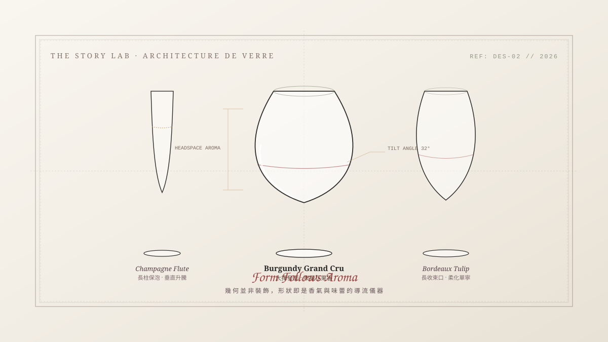
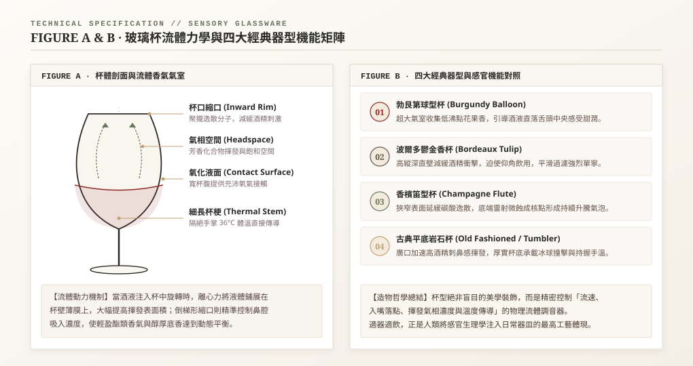

為什麼玻璃杯有不同的形狀？
流體力學與香氣氣室：解構杯體弧度、仰角落點與味蕾感官的造物哲學

當你走進一間講究的餐酒館或咖啡吧，吧檯後方往往整齊懸掛著數十種輪廓迥異的玻璃杯：修長挺拔的香檳笛型杯、圓潤如球的勃艮第廣肚杯、線條垂直俐落的古典威士忌岩石杯、甚至杯沿向外翻開的鬱金香杯。如果玻璃杯的本質只是一具「盛裝液體、供人飲用」的日常容器，人類為何要耗費數個世紀，在幾公分的曲率半徑與幾微米的杯口薄度上斤斤計較？
這並非附庸風雅的餐桌禮儀，而是一場結合了流體力學、化學揮發速率、人體工學與大腦感官跨模態整合的精密造物實驗。同同一款液體倒入不同輪廓的杯子裡，你的鼻子和舌頭，將會記錄下截然不同的風味故事。
形式並非裝飾：一場顛覆歐洲玻璃工藝的「形隨機能」革命
在 20 世紀中葉以前，歐洲上流社會的玻璃杯主要扮演著「炫耀財富與工藝繁複」的裝飾角色。當時的典型酒杯普遍厚重、帶有厚實切面花紋（Cut Crystal），甚至常以重金屬染色玻璃製作。人們在乎的是水晶在燭光下折射出的璀璨光斑，而非杯中物本身散發的天然香氣。
這項延續數百年的奢華傳統，在 1958 年被奧地利玻璃工藝世家第九代傳人克勞斯·里德爾（Claus Riedel）徹底打破。受到包浩斯（Bauhaus）運動「形隨機能（Form Follows Function）」的啟發，他大膽提出了一個在當時被視為異端的假設：「杯子的大小、形狀與邊緣結構，會直接決定飲用者感受到的風味平衡。」
克勞斯拋棄了所有繁複雕花與色彩，採用極其輕薄、完全透明的無鉛水晶吹製工藝，推出了傳奇的「勃艮第特級園杯（Burgundy Grand Cru）」。這個擁有龐大球型杯肚、杯壁薄如蟬翼的器皿，在 1958 年布魯塞爾世界博覽會上震驚了整個歐洲設計界，並永久被紐約現代藝術博物館（MoMA）列為館藏——它標誌著人類飲用器具從「視覺裝飾物」正式躍升為「感官分析儀器」。
氣室、表面積與仰角：藏在杯體幾何裡的物理調音器
究竟玻璃杯的幾何形狀是如何改變感官感知的？背後主要仰賴三大物理機制的協同運作：
第一機制：氣室容積與液面揮發（Headspace & Surface Area）。當酒液注入杯中並輕輕旋轉（Swirling）時，流體力學的離心力會迫使液體在杯壁上爬升形成一層極薄的「液膜」。這層液膜大幅增加了液體與空氣的接觸表面積，促使芳香分子迅速脫離液態逸散。而液面上方由杯壁圍合出的空腔——即香氣氣室（Headspace），就像一座密閉的小型蒸發艙。向內收斂的杯口如同聚光燈，將輕盈的花果香氣分子收集、濃縮，避免它們過快散逸進周遭大氣。
第二機制：人體仰角與液體落點（Head Tilt & Flow Dynamics）。杯口的直徑與翻卷弧度，在無形中操控著人體的飲用姿勢。飲用一杯窄口高深的高腳杯時，為了讓液體越過杯沿，人的頸部必須自然向後仰，下巴微抬；此時液體會形成一條細窄而快速的流速，直接越過舌前尖端，落在舌面的中後部。相反地，面對寬口開闊的杯型時，人的頭部幾乎保持平視，液體自然鋪展為寬闊的薄層，最先浸潤舌尖兩側。
牛津大學跨模態研究實驗室（Crossmodal Research Laboratory）的感官科學家查爾斯·史賓斯（Charles Spence）教授在多項實驗中指出，雖然過去傳統生物學的「舌頭嚴格味覺地圖」已被現代神經科學修正，但液體進入口腔時的流速、受體接觸面積以及與唾液混合的起始節奏，確實會深刻影響大腦對酸度、單寧澀感與甜潤質地的感知權重。

氣泡、烈酒與溫度：為特定分子量身打造的微型氣候
除了葡萄酒，不同類別飲品的物理特性差異，更催生了截然不同的器型演進分支：
香檳的笛型杯（Flute）與氣泡動力學：法國漢斯大學（University of Reims）的氣泡物理學權威熱拉爾·利熱-貝萊爾（Gérard Liger-Belair）教授長期利用超高速攝影機研究香檳杯。他發現，傳統 19 世紀流行的碟型香檳杯（Coupe）雖然優雅復古，但過大的開口會使珍貴的二氧化碳在數分鐘內迅速逸散殆盡。現代的笛型杯（Flute）以垂直窄柱結構，將氣相暴露面壓縮到最小；許多頂級玻璃工匠更在笛型杯的極深底部，以雷射刻蝕 20 至 30 個微米級環形凹孔——這些刻痕成為不穩定的成核點（Nucleation Sites），誘導溶解在酒液中的氣泡持續、穩定地聚結成珠，形成標誌性的垂直上升微型氣泡噴泉。
烈酒平底岩石杯（Tumbler / Old Fashioned）：高酒精濃度（如 40% ABV 以上的威士忌）若倒入縮口高腳杯中，揮發性極強的純乙醇蒸氣會直接麻痺鼻腔黏膜，讓人難以聞出木桶陳年的焦糖與煙燻香氣。因此，威士忌古典杯採用直壁大口徑設計，允許刺鼻的游離酒精分子快速消散；同時，厚達數公分的厚重底座不僅能承受手部握持，更能穩固承受大型手工老冰塊（Ice Sphere）的旋轉撞擊，利用低溫適度抑制酒精分子的過度躁動。
杯梗（Stem）的熱力學防護：最後，為什麼多數品酒杯都擁有一根細長的杯梗？因為人體掌心的恆溫高達 36°C 至 37°C。當手掌直接環抱杯壁時，熱傳導會在短短幾分鐘內將原本處於 10°C 至 16°C 最適適飲溫度的液體迅速加熱，破壞香氣結構。纖細的杯梗是物理世界中一道優雅的隔熱屏障，讓雙手能夠靈活搖晃觀察，卻不留一絲體溫干擾。
Curator's Note 探索者筆記
玻璃是一種極為奇妙的物質——它透明、無味、化學性質極其穩定，在觸覺上冰涼而純淨。當人類掌握了吹製玻璃的技術後，我們不再只是製造飲水的容器，而是製造了一具具「將物質分子投射進感官世界」的光學與流體透鏡。
一隻優秀的玻璃杯，其最高境界往往是「自我隱形」。它以嚴苛的物理弧度馴服酒精的烈度、以精算的收束聚攏轉瞬即逝的香氣，最後讓品飲者完全忘記玻璃的存在，直接與數千公里外土壤、陽光與發酵的本質坦誠相見。生活中的美好設計，往往就藏在這份看似無形、實則處處精確的節制之中。